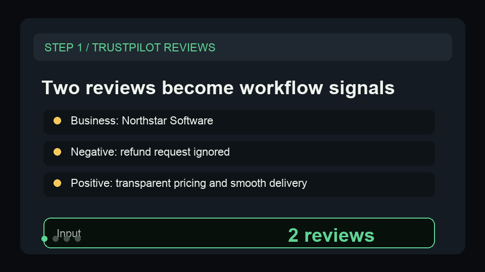
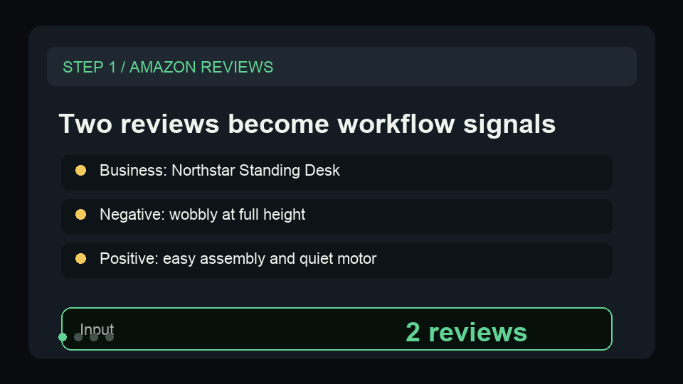
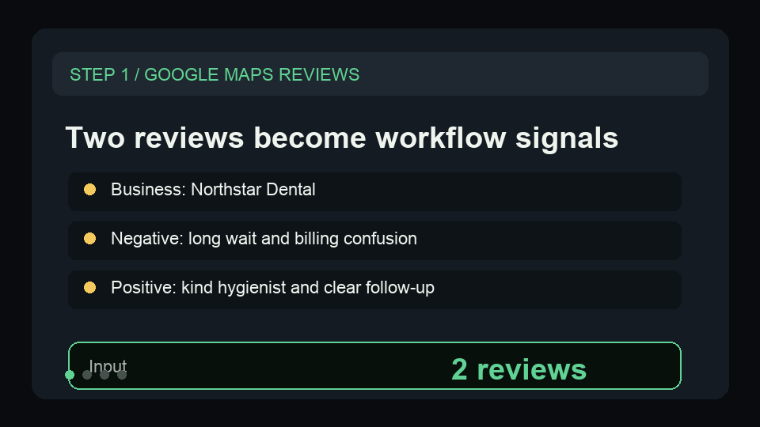

Mine public reviews for proof quotes and message gaps.
A first-run workflow for marketers and agencies that need to turn public reviews into reusable proof quotes, objection language, and weekly content actions.
Product marketers, ecommerce marketers, reputation agencies, and content teams
Positive and negative review language is scattered across sources, so proof quotes and message gaps rarely reach campaigns.
proof quotes, complaint themes, reusable copy snippets, risk tags, and content actions.
Paste representative reviews
Start with a few public-safe reviews before connecting a scraper dataset.
Separate proof from risk
Pull reusable positive quotes apart from objections, complaints, and missing-message themes.
Publish the strongest language
Route proof quotes into landing pages, listings, sales notes, and client reports.
Start narrow, then connect the workflow.
Open a small sample first. Once the output fits the job, connect the matching scraper dataset or schedule.
| Actor | Buyer | Link |
|---|---|---|
| Trustpilot Review Intelligence Monitor | Brand marketers, reputation managers, ecommerce operators, support leaders | Store |
| Amazon Review Intelligence Monitor | Ecommerce sellers, marketplace operators, agencies, product teams | Store |
| Google Maps Review Intelligence Monitor | Local SEO agencies, reputation managers, franchises, multi-location operators | Store |
Built for specific buyer queries.
This page exists to answer focused workflow searches before routing the buyer to a sample-led Store path.
| Query shape |
|---|
| review proof quote extraction |
| mine customer reviews for marketing copy |
| customer review message mining |
Preview the output before opening the Store page.
These public-safe GIFs show the first-run sample becoming the buyer-facing workflow artifact.
Turn two Trustpilot reviews into reputation actions.
The sample keeps the first run small, so a buyer can see support themes, proof quotes, response direction, and weekly reputation actions before adding a larger review export.

Turn two Amazon reviews into seller actions.
The sample shows how marketplace reviews become product-quality themes, listing actions, operations follow-ups, seller-response tasks, and proof quotes without starting with a broad production export.

Turn two Google Maps reviews into response work.
The sample uses fictional local-business reviews, so a buyer can inspect themes, urgency, response direction, recommended action, and proof quote flow before connecting a scraper dataset.

Start with the weekly decision the buyer already repeats.
Show the safe input, scored output, and the Monday handoff this Actor creates.
Route each use case to one exact Actor page and one safe starter input.
Need this adapted before the first run?
Send a public-safe workflow request if the sample, setup, or output handoff needs a variant.
Keep requests public-safe: no credentials, private URLs, customer data, emails, or sensitive business data.